<title>Leave War Sheets</title>
<link rel="preconnect" href="https://fonts.googleapis.com">
<link rel="stylesheet" href="https://fonts.googleapis.com/css2?family=Inter+Tight:wght@400;600;700&display=swap">
<style>
  /* One visual world on purpose: the app's own dark palette (scheduler.css), so the pictures sit in their own light.
     The same page shell as docs/mock/post-out.html. */
  :root {
    color-scheme: dark;
    --bg: #0b0d10; --panel: #15181d; --panel-2: #1b1f26; --ink: #e8edf2; --ink-2: #aeb8c3; --ink-3: #7d8894;
    --edge: #262b33; --accent: #3cc6e6; --warn: #f0c36d; --ok: #57c97a;
  }
  body { background: var(--bg); color: var(--ink); font: 15px/1.55 'Inter Tight', system-ui, -apple-system, 'Segoe UI', sans-serif; }
  main { max-width: 1120px; margin: 0 auto; padding-inline: 16px; padding-block: 28px 56px; display: grid; gap: 22px; }
  header h1 { font-size: 26px; line-height: 1.2; margin: 0 0 6px; text-wrap: balance; letter-spacing: -.01em; }
  header p { color: var(--ink-2); margin: 0; max-width: 72ch; }
  header p b { color: var(--ink); }
  .legend { display: flex; flex-wrap: wrap; gap: 8px 16px; margin-top: 12px; color: var(--ink-2); font-size: 13px; }
  .legend span { display: inline-flex; align-items: center; gap: 6px; }
  section { background: var(--panel); border: 1px solid var(--edge); border-radius: 12px; padding: 18px; display: grid; gap: 12px; }
  section.ask { border-color: rgba(60, 198, 230, .45); }
  .head { display: flex; flex-wrap: wrap; align-items: baseline; gap: 6px 12px; }
  h2 { font-size: 17px; margin: 0; text-wrap: balance; }
  h3 { font-size: 14px; margin: 4px 0 0; color: var(--ink-2); font-weight: 600; letter-spacing: .02em; }
  .rul { font: 600 11px/1 'Inter Tight', system-ui, sans-serif; letter-spacing: .06em; text-transform: uppercase; color: var(--ink-3); }
  section > p { margin: 0; color: var(--ink-2); max-width: 78ch; }
  section > p b { color: var(--ink); }
  .pics { display: flex; flex-wrap: wrap; gap: 14px; align-items: flex-start; }
  figure { margin: 0; display: grid; gap: 6px; min-width: 0; }
  figure.wide { flex: 1 1 560px; }
  figure.mid { flex: 1 1 340px; max-width: 620px; }
  figure.phone { flex: 0 1 240px; }
  figure img { display: block; width: 100%; height: auto; border: 1px solid var(--edge); border-radius: 8px; background: #000; }
  figcaption { color: var(--ink-3); font-size: 13px; }
  .tag { font: 600 11px/1.4 'Inter Tight', system-ui, sans-serif; letter-spacing: .05em; text-transform: uppercase; padding: 1px 6px; border-radius: 4px; color: #0b0d10; }
  figcaption .tag { margin-right: 6px; }
  .real { background: var(--accent); }
  .drawn { background: var(--warn); }
  ul.read { margin: 0; padding-left: 20px; color: var(--ink-2); display: grid; gap: 4px; max-width: 80ch; }
  ul.read b { color: var(--ink); }
  ol.q { margin: 0; padding-left: 22px; display: grid; gap: 8px; max-width: 80ch; }
  ol.q li { color: var(--ink-2); }
  ol.q li b { color: var(--ink); }
  .rec { color: var(--ok); font-weight: 600; }
  table.what { border-collapse: collapse; width: 100%; font-size: 14px; }
  .tablewrap { overflow-x: auto; }
  table.what th, table.what td { text-align: left; padding: 7px 10px; border-bottom: 1px solid var(--edge); vertical-align: top; }
  table.what th { color: var(--ink-3); font-weight: 600; font-size: 12px; letter-spacing: .05em; text-transform: uppercase; }
  table.what td { color: var(--ink-2); font-variant-numeric: tabular-nums; }
  table.what td:first-child { color: var(--ink); font-weight: 600; white-space: nowrap; }
</style>

<main>
  <header>
    <h1>One look for the Leave War sheets</h1>
    <p>The real app (demo world, bidding open, January) with the change drawn in (D264–D266). <b>Approved 27 Sep 26
      (D331–D335):</b> order A, "Delete", a member's Move on his own bid, the Move button B, How many kept — the design of
      record for the build.</p>
    <div class="legend">
      <span><span class="tag real">real</span> the app today</span>
      <span><span class="tag drawn">drawn</span> the proposal</span>
    </div>
  </header>

  <section>
    <div class="head"><h2>1 · Today</h2><span class="rul">your pictures</span></div>
    <p>One day and a dragged block: different buttons, in different places. Move sits with the decisions on one; Delete
      and a blue Move… sit at the foot of the other. Clear hides among the leave types.</p>
    <h3>One day — Ryder, 4 Jan</h3>
    <div class="pics">
      <figure class="mid">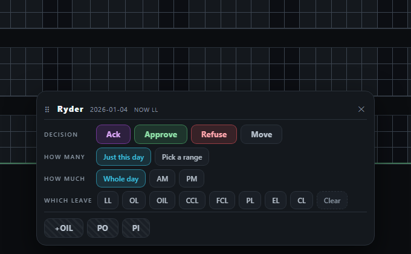<figcaption><span class="tag real">real</span>desktop</figcaption></figure>
      <figure class="phone">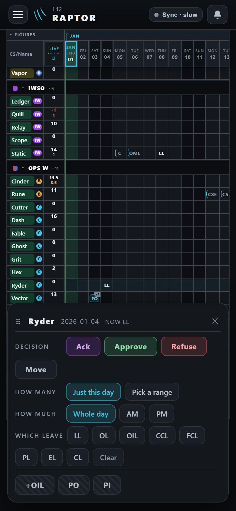<figcaption><span class="tag real">real</span>phone</figcaption></figure>
    </div>
    <h3>A block — Ryder, Vector, Wisp, 4–5 Jan</h3>
    <div class="pics">
      <figure class="mid">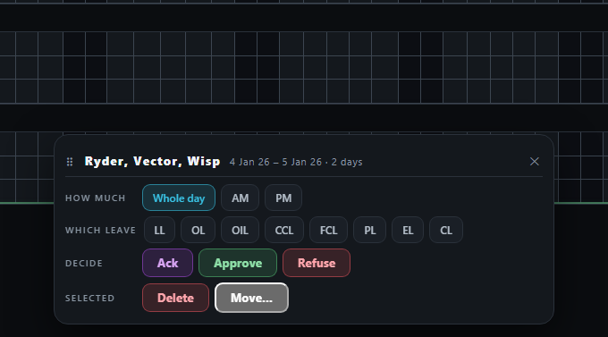<figcaption><span class="tag real">real</span>desktop</figcaption></figure>
      <figure class="phone">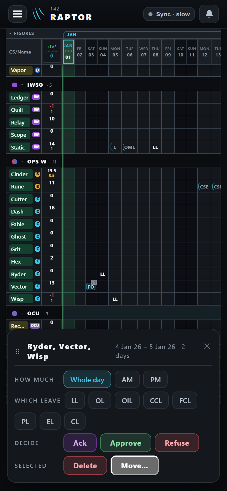<figcaption><span class="tag real">real</span>phone</figcaption></figure>
    </div>
  </section>

  <section>
    <div class="head"><h2>2 · Proposed: what's there first</h2><span class="rul">recommended · D264</span></div>
    <p>Both sheets, the same rows in the same order: <b>Decide</b> · <b>Selected</b> (Move, Delete) · <b>How much</b> ·
      <b>Which leave</b>. The one-day sheet keeps <b>How many</b> at the top — it names the days the rest acts on, as
      the drag does for a block. On a day holding a bid, what you came for is at the top; on an empty day those rows
      aren't there and the sheet opens on the leave, as today.</p>
    <div class="pics">
      <figure class="mid">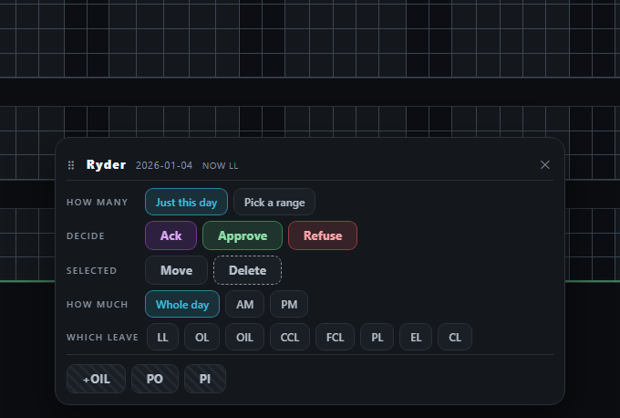<figcaption><span class="tag drawn">drawn</span>one day · desktop</figcaption></figure>
      <figure class="phone">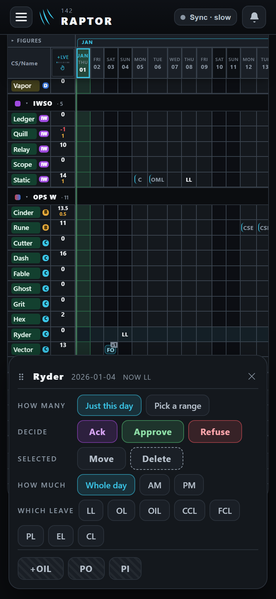<figcaption><span class="tag drawn">drawn</span>one day · phone — the same height as today</figcaption></figure>
    </div>
    <div class="pics">
      <figure class="mid">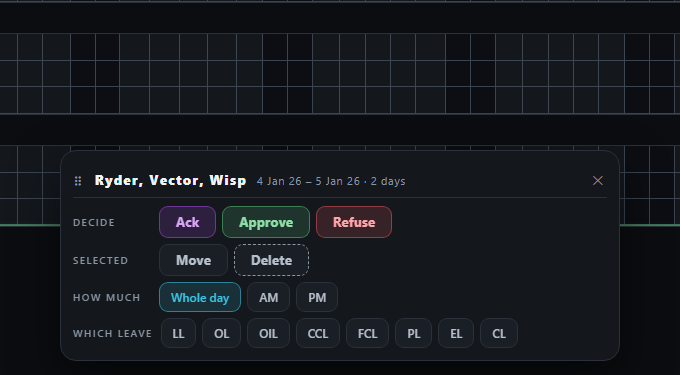<figcaption><span class="tag drawn">drawn</span>block · desktop</figcaption></figure>
      <figure class="phone">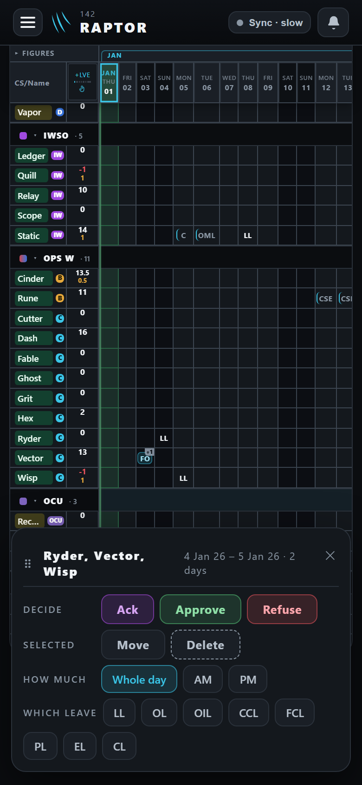<figcaption><span class="tag drawn">drawn</span>block · phone</figcaption></figure>
    </div>
  </section>

  <section>
    <div class="head"><h2>3 · The other order: new leave first</h2><span class="rul">D264</span></div>
    <p>Today's block order, given to both: How much · Which leave · Decide · Selected.</p>
    <div class="pics">
      <figure class="mid">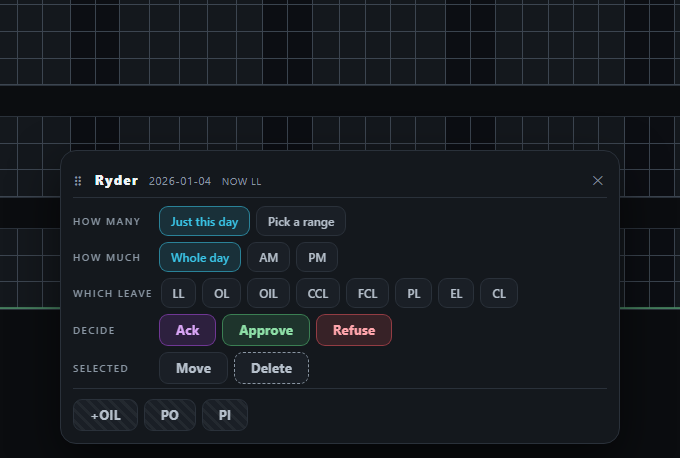<figcaption><span class="tag drawn">drawn</span>one day · desktop</figcaption></figure>
      <figure class="phone">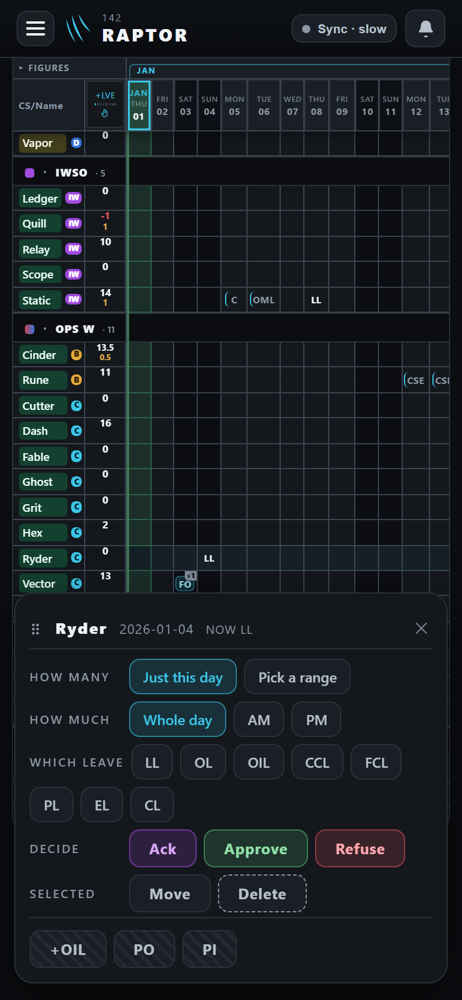<figcaption><span class="tag drawn">drawn</span>one day · phone</figcaption></figure>
    </div>
    <div class="pics">
      <figure class="mid">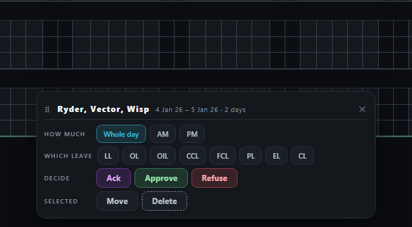<figcaption><span class="tag drawn">drawn</span>block · desktop</figcaption></figure>
      <figure class="phone">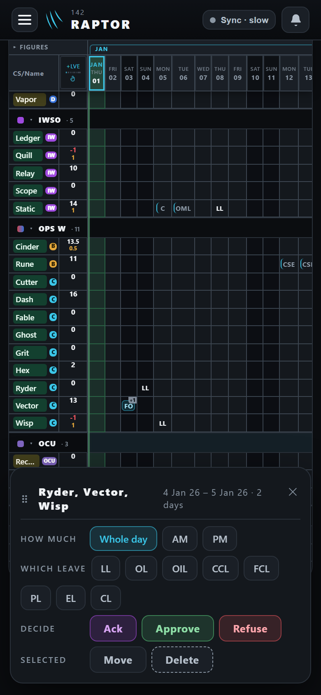<figcaption><span class="tag drawn">drawn</span>block · phone</figcaption></figure>
    </div>
  </section>

  <section>
    <div class="head"><h2>4 · A bid beside an OIL award moves</h2><span class="rul">D265</span></div>
    <p>Vector's 3 Jan: an OIL award and an LL bid. Today neither the day's list nor a block over it offers Move. Proposed:
      the bid gets Move; it travels alone and <b>the award stays</b>.</p>
    <h3>The day's list</h3>
    <div class="pics">
      <figure class="mid">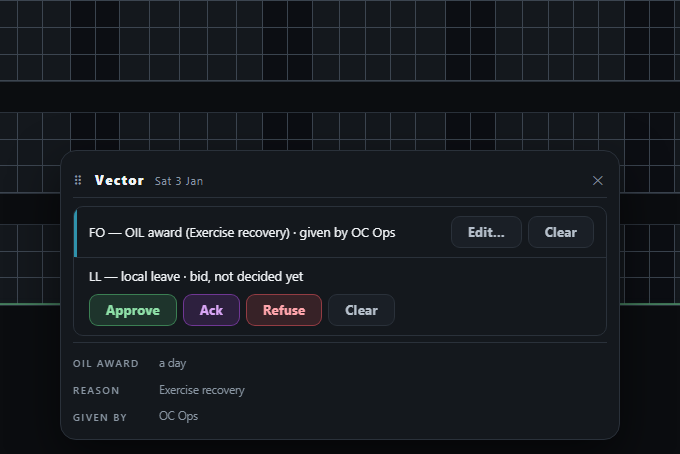<figcaption><span class="tag real">real</span>today · no Move</figcaption></figure>
      <figure class="mid">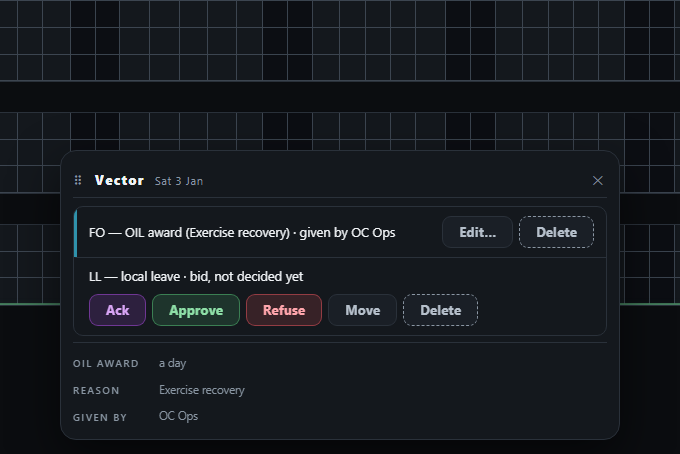<figcaption><span class="tag drawn">drawn</span>proposed · the sheets' order and words</figcaption></figure>
      <figure class="phone">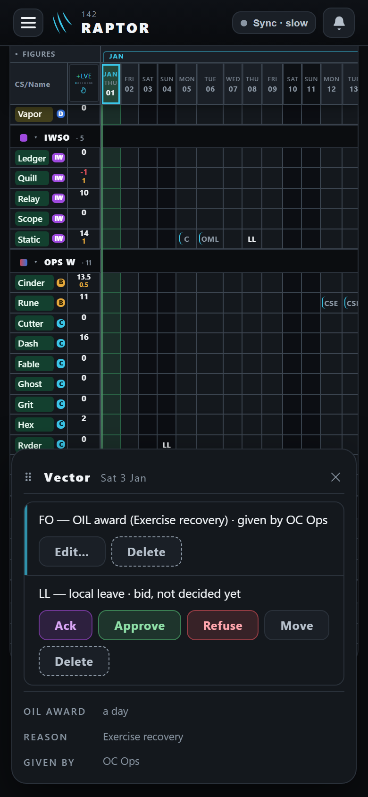<figcaption><span class="tag drawn">drawn</span>phone</figcaption></figure>
    </div>
    <h3>A block over it — Ryder, Vector, Wisp, 3 Jan</h3>
    <div class="pics">
      <figure class="mid">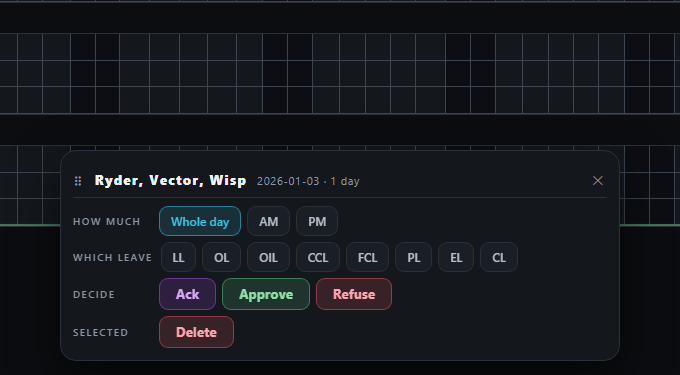<figcaption><span class="tag real">real</span>today · Delete only</figcaption></figure>
      <figure class="mid"><figcaption><span class="tag drawn">drawn</span>proposed · Move takes the LL</figcaption></figure>
      <figure class="phone">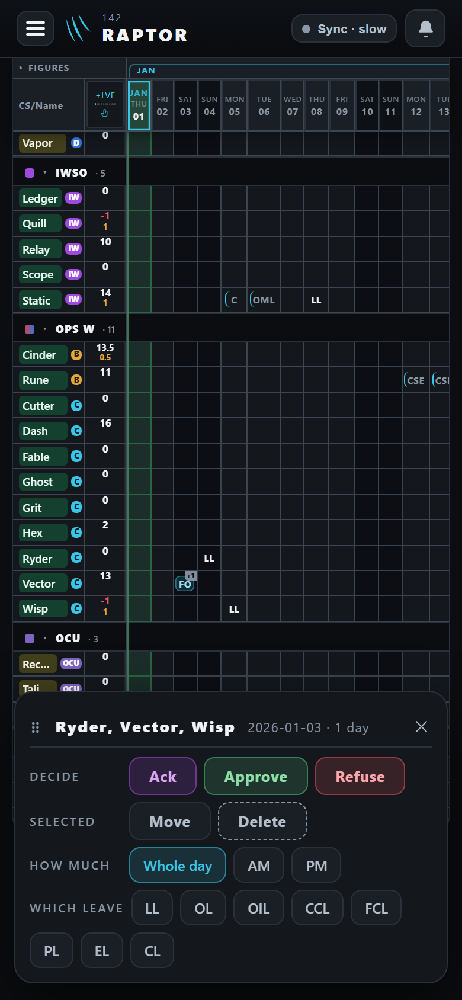<figcaption><span class="tag drawn">drawn</span>phone</figcaption></figure>
    </div>
  </section>

  <section>
    <div class="head"><h2>5 · Moving from the day's list</h2><span class="rul">D266</span></div>
    <p>Move closes the list and picks up that one record — no date box. Then tap a day, the same as one chip (edge
      scroll, the months keep it, a tap outside the grid ends it).</p>
    <div class="pics">
      <figure class="wide">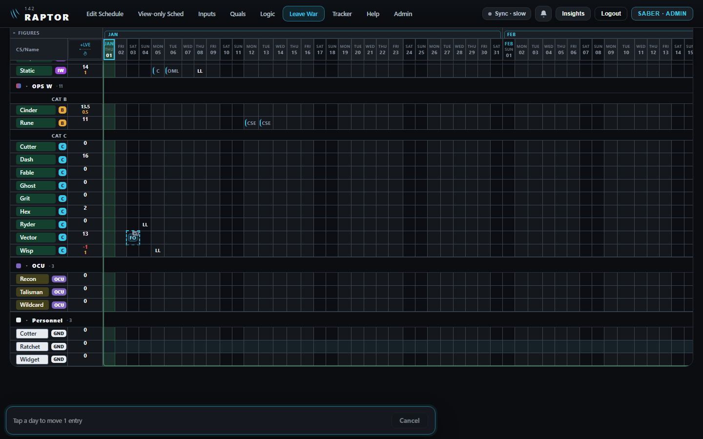<figcaption><span class="tag drawn">drawn</span>desktop · the count is what moves</figcaption></figure>
      <figure class="phone">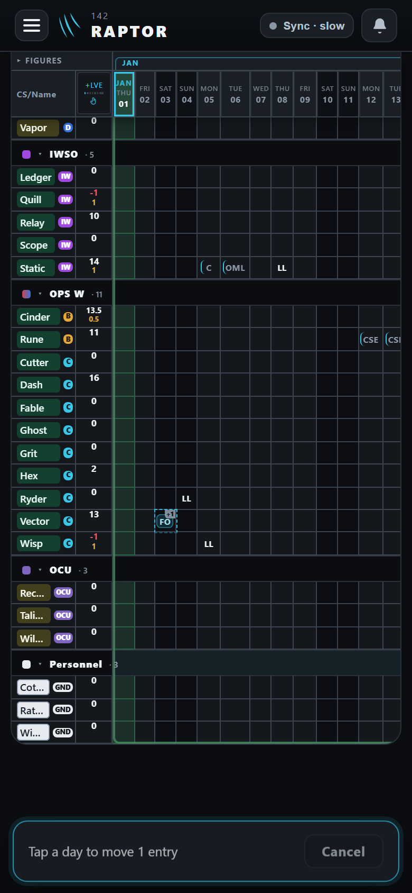<figcaption><span class="tag drawn">drawn</span>phone</figcaption></figure>
    </div>
  </section>

  <section>
    <div class="head"><h2>6 · A member's own bid</h2><span class="rul">question 3</span></div>
    <p>Ranger, bidding open, taps his own LL. Dragging already lets him move his own bid; the one-day sheet gives him
      no Move. Proposed: the same Selected row.</p>
    <div class="pics">
      <figure class="mid">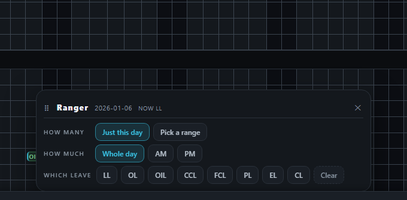<figcaption><span class="tag real">real</span>today</figcaption></figure>
      <figure class="mid">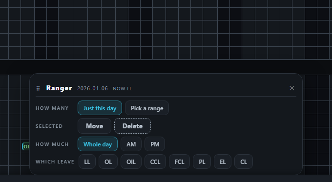<figcaption><span class="tag drawn">drawn</span>proposed</figcaption></figure>
      <figure class="phone">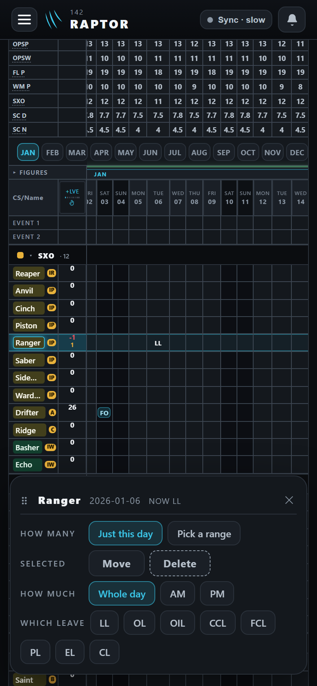<figcaption><span class="tag drawn">drawn</span>phone</figcaption></figure>
    </div>
  </section>

  <section>
    <div class="head"><h2>7 · The Move button</h2><span class="rul">D330 · question 4</span></div>
    <p>One look, the same on every sheet and a little apart from the rest. It borrows the <b>move mode's teal</b> — the
      bar Move opens, its Confirm and the landing outline are that teal. Delete stays the dashed grey.</p>
    <h3>A · Grey, grey arrow</h3>
    <div class="pics">
      <figure class="phone"><figcaption><span class="tag drawn">drawn</span>one day</figcaption></figure>
      <figure class="phone">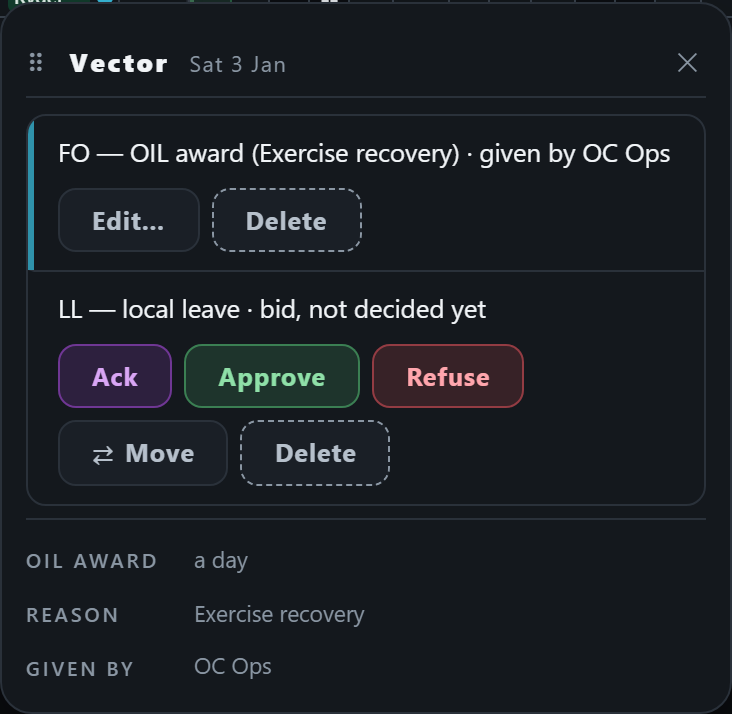<figcaption><span class="tag drawn">drawn</span>the day's list</figcaption></figure>
      <figure class="mid">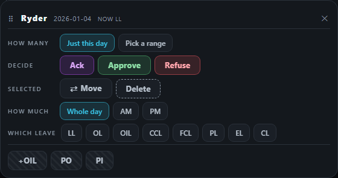<figcaption><span class="tag drawn">drawn</span>desktop</figcaption></figure>
    </div>
    <h3>B · Grey, teal arrow — recommended</h3>
    <p>Grey, so it never looks already picked (the teal-filled chips are the picked ones); the teal arrow says what it opens.</p>
    <div class="pics">
      <figure class="phone">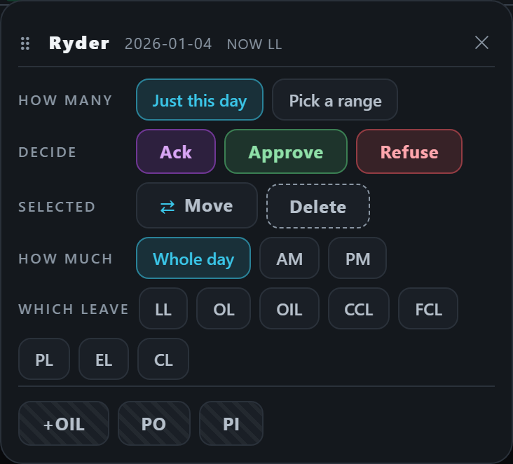<figcaption><span class="tag drawn">drawn</span>one day</figcaption></figure>
      <figure class="phone"><figcaption><span class="tag drawn">drawn</span>the day's list</figcaption></figure>
      <figure class="mid"><figcaption><span class="tag drawn">drawn</span>desktop</figcaption></figure>
    </div>
    <h3>C · Round ends, teal arrow</h3>
    <p>The only round button on the sheet.</p>
    <div class="pics">
      <figure class="phone">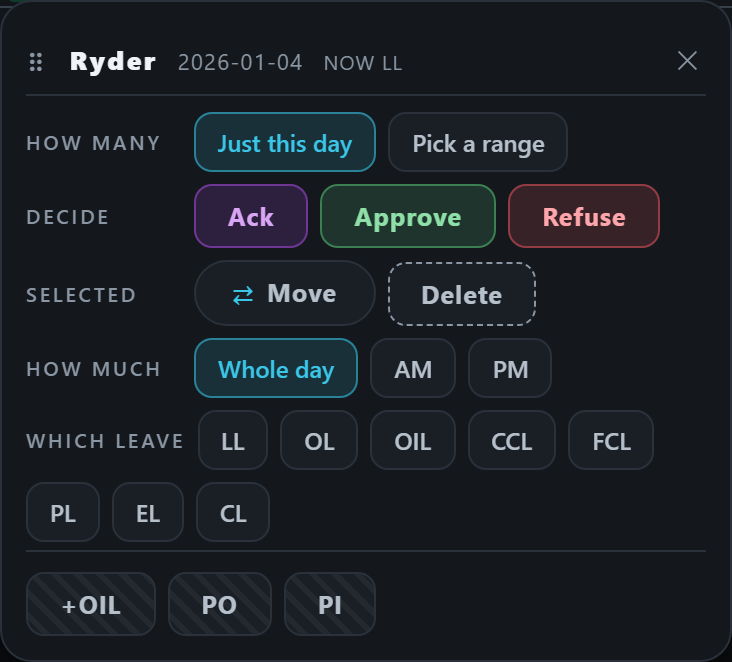<figcaption><span class="tag drawn">drawn</span>one day</figcaption></figure>
      <figure class="phone">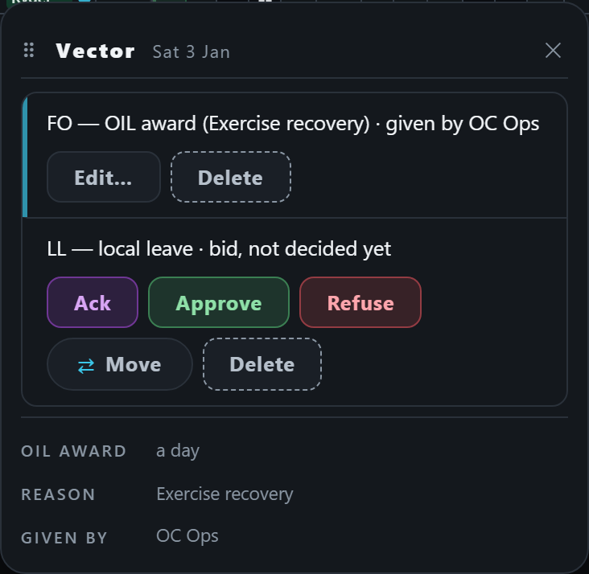<figcaption><span class="tag drawn">drawn</span>the day's list</figcaption></figure>
      <figure class="mid"><figcaption><span class="tag drawn">drawn</span>desktop</figcaption></figure>
    </div>
    <h3>D · A colour of its own</h3>
    <p>Stands out most. But on this sheet a coloured button paints its colour on the day (Ack purple, Approve green,
      Refuse red); Move paints none.</p>
    <div class="pics">
      <figure class="phone">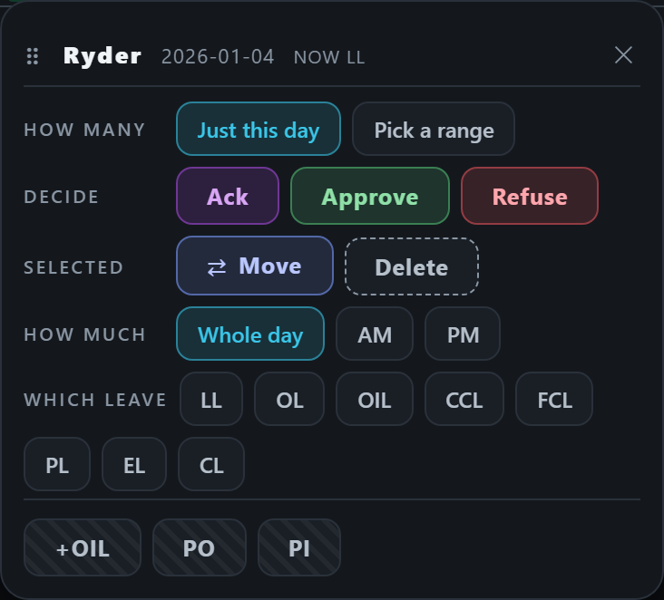<figcaption><span class="tag drawn">drawn</span>one day</figcaption></figure>
      <figure class="phone">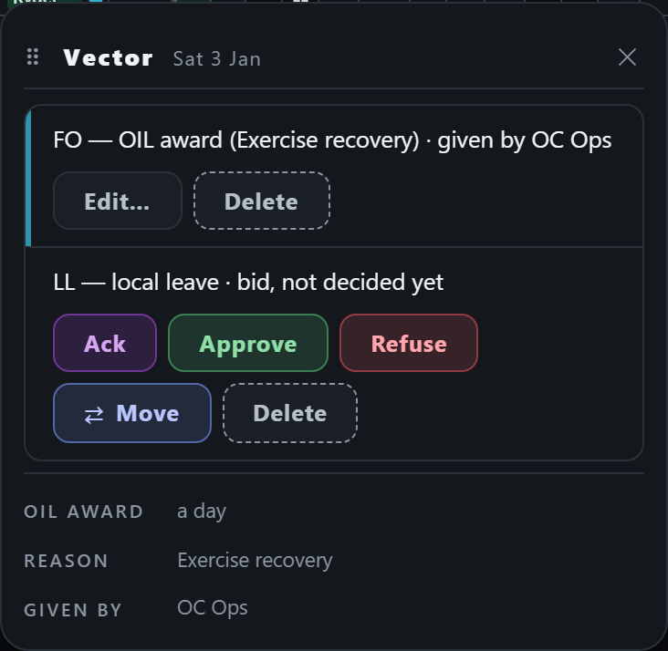<figcaption><span class="tag drawn">drawn</span>the day's list</figcaption></figure>
      <figure class="mid">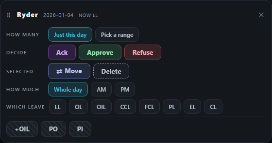<figcaption><span class="tag drawn">drawn</span>desktop</figcaption></figure>
    </div>
  </section>

  <section>
    <div class="head"><h2>What I read into your words</h2><span class="rul">correct any</span></div>
    <ul class="read">
      <li><b>Delete</b> is the one word for taking something away — the one-day Clear and the list's Clear become Delete.
        Dashed, not red, so on the list it never reads as Refuse beside it.</li>
      <li><b>Pick a range</b> widens the selection: Decide, Move and Delete then act on every day in it, as a drag across
        those days does.</li>
      <li><b>Move's rules don't change:</b> it lands only where its half of the day is free, a refusal says why, and an
        OIL award or leave filed on the Inputs page stays put.</li>
      <li>The block's <b>"Post out (PO)…"</b> reads <b>PO</b>, like the one-day sheet.</li>
      <li><b>Every sheet follows one rule for who may move</b>, so the one-day sheet and the block never differ (today
        a block can move a bid in a draft war and the one-day sheet can't).</li>
      <li><b>A refused bid can move too</b> (the one-day sheet already does this when it's alone on its day); it lands
        undecided, as every moved bid does.</li>
      <li><b>In a block, what can move goes; what can't stays</b> — an approved leave on a published war, an award —
        and the banner says what stays. A landing that can't take a moving record is still refused whole.</li>
    </ul>
  </section>

  <section class="ask">
    <div class="head"><h2>Your four answers</h2></div>
    <ol class="q">
      <li><b>Which order?</b> A — what's there first (section 2), or B — new leave first (section 3).
        <span class="rec">I recommend A.</span></li>
      <li><b>One word, "Delete", for Clear and Delete?</b> <span class="rec">I recommend yes.</span></li>
      <li><b>A member gets Move on his own bid's one-day sheet while bidding is open?</b> Dragging already allows it.
        <span class="rec">I recommend yes.</span></li>
      <li><b>The Move button?</b> A, B, C or D (section 7). <span class="rec">I recommend B.</span></li>
    </ol>
  </section>
</main>
